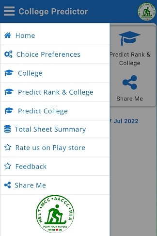
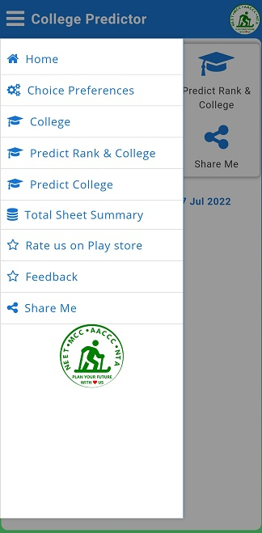
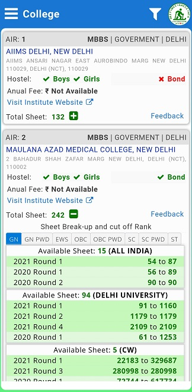
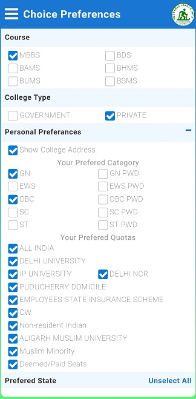
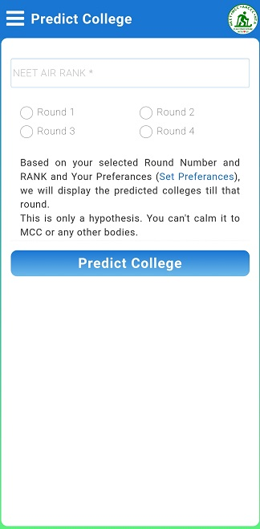
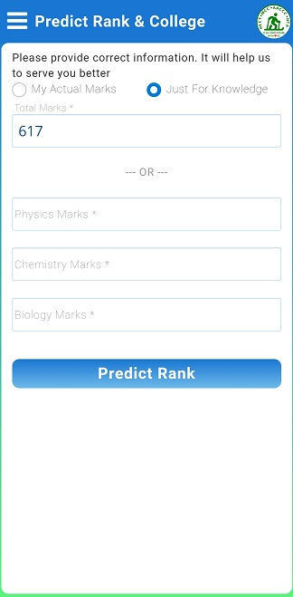
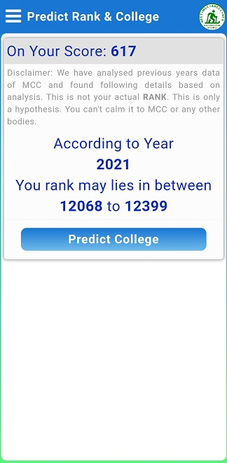
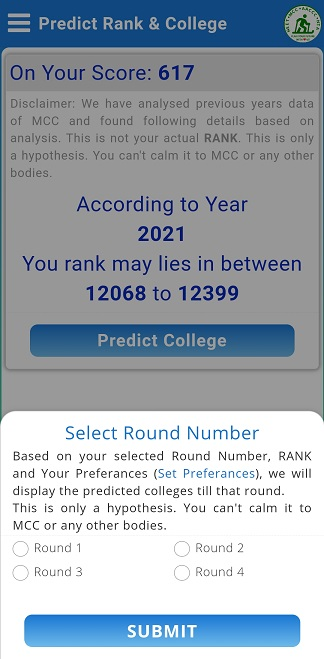
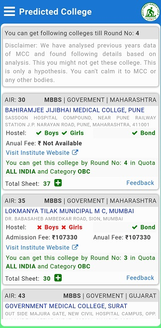

NEET-UG 2022 College Cut-Offs & Rank Predictor
Candidates who appeared in the NEET UG 2022 can check their results from the official website or can predict their rank using our app.
After checking the result or predicting rank, those who are looking for NEET College
Prediction 2022 can use our prediction model which is based on Artificial Intelligence in app NEET-UG RANK CUTOFF & COLLEGE PREDICTOR.
We don't ask any user to share their personal details like Name, Age, Gender, mobile number, NEET roll number etc.
NEET UG 2022 was administered by the NTA and the result was made public by the officials on 07th September 2022 in online mode as a scorecard.
Students who passed the exam can predict his/her college with the help of our App
NEET-UG RANK CUTOFF & COLLEGE PREDICTOR.
Our App known for following features

Know your admission chances in Medical college in course like MBBS, BDS, BAMS,
BHMS, BUMS with NEET AIR Rank
You can know all medical college rank which is assigned by our Artificial Intelligence
model which is based on student preferences given to a college for their admission.
Predict medical colleges on your NEET AIR rank or NEET Scores
Predict your rank based on NEET score
Get a personalized report of Top MBBS, BDS & AYUSH Colleges colleges details
Check course & counseling wise cut-offs NEET AIR of all medical colleges for various quotas & categories
Know Total seat of All courses quota wise
You can get these all details without sharing any of your personal informations like name, mobile no, email etc
NEET UG 2022 counseling
Around 19 lakhs candidates appeared in the Medical Entrance Exam conducted by the National Testing Agency,
out of the total candidates who secured the qualifying marks will be eligible to take part in the counseling.
The entrance examination was conducted by the National Testing Agency but the counseling will be held by the
Medical counseling Committee for MBBS, BDS & Nursing &
Ayush Admissions Central counseling Committee for BAMS, BHMS, BUMS, BSMS,
whose official website is mcc.nic.in
& aaccc.gov.in respectively. Our App
NEET-UG RANK CUTOFF & COLLEGE PREDICTOR
will help you to plan your counseling to get the best medical college on your rank.
How to use Our App
Set your preferences like course, College type(Government or Private)
Your category, Quota & Your preferred state
Predict your NEET AIR Rank using the link "Predict Rank & College" sharing your NEET score.
We will show your Rank range based on your score. Or If you have NEET AIIT rank then you
can directly go to link "Predict College"
On tapping the "Predict College" button with your NEET AIR Rank and counseling Round number
and your preferences settings
We will show all the medical colleges which you may get.
Know Total seat of All courses quota wise using the link "Total seat summary"
If you like our work and APP or This has helped you in any way, don't forget to rate us on
Play Store
Our APP use cases








I am a software engineer, having M.Tech in Artificial Intelligence from IIT
In NEET 2021 my brother secured a very good rank but we had a lack of knowledge about the medical colleges.
When we were filling the college choice for counseling,
we were not sure about in which sequence to select the college to get the best college or till which
round we should wait to get the best medical college. We didn't find any information regarding this on the internet in one place.
Then only I thought of developing this APP and now it is available for all. Anyhow, my brother has got a
reputed Government medical college for MBBS thanks to information collected by me and that information I have shared in APP for you also.
Please feel free to use this app, have patience and enjoy the best deserving medical college.
Become a very good Doctor and save people around the world.
Thanks for visiting us
For any query or for any IT solution write us on
yatrakasathicc@gmail.com